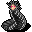
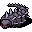
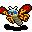

蜘蛛の穴ぐら Spider's Nest
英語版 CrawlWiki の記事「Spider's Nest」(0.31 向け、2026-02-12 版)の翻訳です。原文の著者は編集履歴をご覧ください。
この記事は 0.31 の時点の内容で、最新の 0.34 とは違うところがあるかもしれません。
| 崩れかけ、蜘蛛の巣に覆われた蜘蛛の穴ぐらの洞窟は、毒を持つ節足動物や、さまざまな気味の悪い這い回るものでぎっしりだ。
ひとつの迷宮には、蜘蛛の穴ぐらと蛇穴のうちどちらか一方の分岐しかない。 この分岐の入口は獣の棲み処の第2〜3階層にある。 この分岐は4階層ある。 この分岐には遊糸のルーンがある。 |
 蜘蛛の穴ぐらは、崩れかけた4階層の分岐だ。この分岐は、あらゆる種類の毒を持つ蜘蛛や昆虫でいっぱいだ。勇気を出して挑んだ冒険者は、最下層で遊糸のゾットのルーンを手にできる。
蜘蛛の穴ぐらは、崩れかけた4階層の分岐だ。この分岐は、あらゆる種類の毒を持つ蜘蛛や昆虫でいっぱいだ。勇気を出して挑んだ冒険者は、最下層で遊糸のゾットのルーンを手にできる。
蜘蛛の穴ぐらの入口は獣の棲み処:2〜3 にある。蜘蛛の穴ぐらが見つかったなら、そのゲームでは蛇穴は見つからない。
構造
蜘蛛の穴ぐらの間取りは、おおむね乱雑でいきあたりばったりだ。獣の棲み処を窮屈にしたような感じで、細いトンネルと大きな洞窟が入り組んでいる。狭い通り道は少なく、足の速いモンスターに取り囲まれる機会がいくらでもある。蜘蛛の巣と浅い水脈の水たまりがよくある。
蜘蛛の穴ぐら:4 の最後のヴォールトを甘く見てはいけない。より危険な生き物でいっぱいなだけでなく、憤怒せる蛾がいると、飛びつき蜘蛛や大喰い蜘蛛や皇帝サソリの一団が、あっというまに甲殻の死の大波に変わる。
モンスターの特徴
この分岐には背赤蜘蛛や巨大タランチュラのような「ありふれた」蜘蛛がうようよしている。足が速くて攻撃をかわしやすい敵が大勢でやってくるので、すぐに群がられてしまう。ありがたいことに、こうした蜘蛛は耐性を何も持たず、AC は低く、意志力もほとんどなく、毒も効く。そのため群れを抑える手段の多くがよく効く(一覧は下を参照)。
群れのあちこちには、もっと手ごわい相手も混じっている。エントロピーの編み手、母蜘蛛、女郎蜘蛛といった連中は単独でも強く、蜘蛛の群れと一緒だとさらに厄介だ。ムカデの悪魔はとてつもない速さで再生するので、1ターンあたりのダメージを高くする(か、動きを封じる手段を用意する)必要がある。呪文使いは特に幽体蛾に気をつけよう。生まれつき透明なモンスターで、MP をどんどん吸い取ってくる。
ほかの敵を強化する敵も多い。無気力の蝸牛(あなたを減速させる)、ファラオアリ(死ぬときに魂の呪縛を唱え、倒された蜘蛛を幻像に変える)、憤怒せる蛾(ほかのモンスターをバーサークさせ、背赤蜘蛛でさえ強力な近接攻撃の脅威に変える)などだ。
戦略
毒耐性はとても役に立つ。ありふれた背赤蜘蛛でさえ1回の攻撃で 33〜58 HP ぶんの毒を与えてくるうえ、どの蜘蛛もプレイヤーの1ターンに2回動ける。rPois がないなら、治療の薬をたくさん使う覚悟をしておこう。
呪文使いは、蜘蛛の穴ぐらに入る前に幽体蛾への対策を用意しておくこと。
蜘蛛相手に特によく効く、群れを抑える手段:
- 毒。オルグレブの毒気の光輪は蜘蛛に恐ろしいほど効くし、悪臭の雲はここにいるほとんどの相手の動きを封じられる。ただし、「手ごわい」相手の多くは毒に対して普通程度で、皇帝サソリ、幽体蛾、ファラオアリは毒に耐性があるか、まったく効かない。
- 死霊術。蜘蛛がこれだけいれば、味方のアンデッドの群れを作るのはたやすい。アンデッドは毒が効かないので、よく戦ってくれる。ただし、アンデッドの味方を作る前に、まず相手を倒す手段(ボーグンジョルの忌まわしき掌握など)が必要だ。
- 発動。震動石の缶と凝結の風見は群れとの戦いにうってつけで、発動スキルが高ければ驚くほどよく効く。稲妻のロッドも同じように使える。ありふれた蜘蛛はどれも意志力が低いので、呪術のワンドもいい。魅了のワンドなら蜘蛛を味方につけられるし、金縛りのワンドなら近接攻撃してくる相手を1体減らせる。
- 恐慌の巻物。蜘蛛の幻像には恐怖が効かないが、ここにいる生きた生き物や悪魔はかなりの確率で怯える。
- 透明化。ここにいるほとんどの相手は透明なものが見えない。幽体蛾でさえ透明なものは見えないので、呪文使いは MP を吸われずにすむ。ただし、太陽の蛾の光輪の中に立つと、透明でも姿がばれてしまう。
あると助かるもの
あればなおよいもの:
- 腐食への耐性。エントロピーの編み手への備えになる
- 冷気耐性。ファラオアリが作る幻像との戦いに役立つ
- 負のエネルギーへの耐性。女郎蜘蛛の衰弱の矢のダメージを減らせる
- 電撃耐性。電光蜂の怖さがやわらぐ
モンスター
| s |
s |
s |
s |
B |
| s |
s |
s  ムカデの悪魔 |
w  鋼棘ワーム |
w |
| B |
B |
B |
y  憤怒せる蛾 |
y |
| s |
s |
H |
y |
y |
| y |
B |


ユニーク
| i |
S |
H |
H |
| R |
d |
@ |
@ |
| g |
@ |
@ |
@ |
| R |
@ |
I |
@ |
変更履歴
- 0.28 で蜘蛛の穴ぐらは大きく作り直され、もとからいた住人が変わったうえ、新しい住人が数多く加わった(クリシボラ、ファラオアリ、鋼棘ワーム、放射能ゴキブリ、女郎蜘蛛、母蜘蛛)。騒音の伝わり方も、静かな状態から普通に戻された。
- 0.26 で岩石の甲虫がまれな住人として戻ってきた。
- 0.19 より前は、蜘蛛の穴ぐらには岩石の甲虫と巨大黄色蜂が住んでいた。
- 0.17 より前は、蜘蛛の穴ぐらは5階層あった。ゴライアスの甲虫、穴掘りの甲虫、巨大ダニがいなくなり、エントロピーの編み手と無気力の蝸牛が加わった。
- 0.11 より前は、蜘蛛の穴ぐらは1階だけの単純な小分岐で、似たようなモンスターといくらかの財宝(ときにはアンブロシアも)があったが、ルーンはなかった。
| 分岐の一覧 |
|---|
| |
| 関連項目: ポータル |